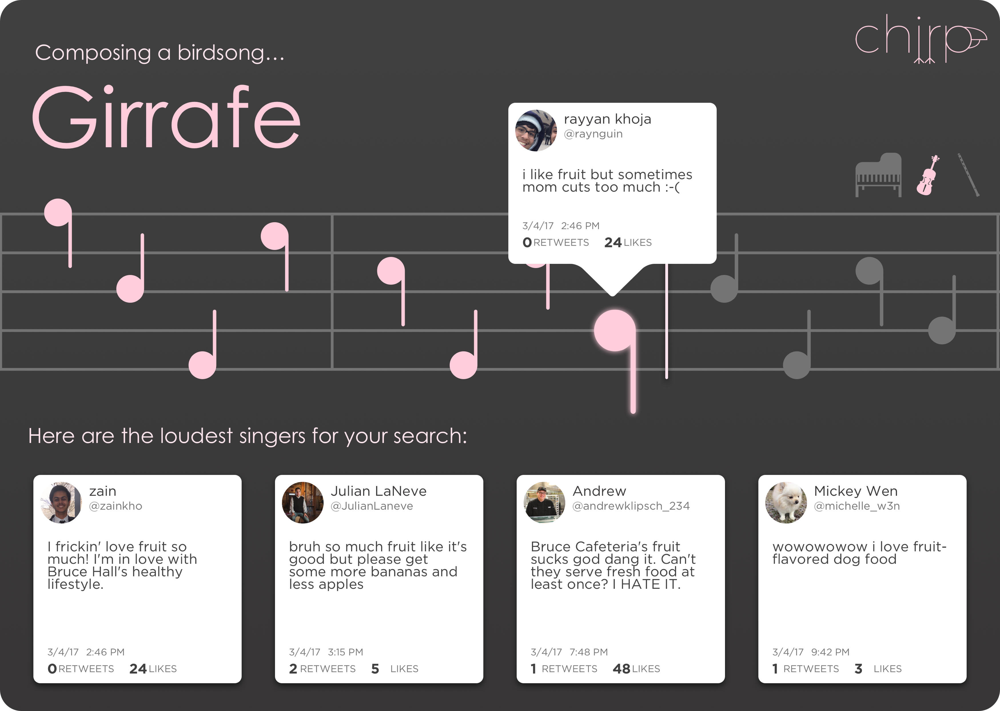

Overview
Chirp is a web application that uses sentiment analysis on Twitter to create music on various instruments.
Roles
User Interface Designer
Presentation Director
Timeline
March 2017 - April 2017
Results
Finalist for the University of North Texas Sherman/Barsanti Inspiration Award.

The problem.
High schoolers have some of the most innovative and creative minds in the world: all the more reason that the field of academia should be doing more to attract these students to research as a profession. Unfortunately, research shows that students either 1) are afraid they are not smart enough or more commonly, 2) are disinterested in the topic of research.
First of all, what do teenagers like anyway?
Social media proves to be an attractive medium for teenage entertainment. Second? Music. Combining these two attractions results in a unique product that has interesting effects on teenage audiences.
Second, a swirl of music and media.
The idea I came up with was turning social media posts into music. Users can type in a keyword to learn about the popular opinions on that topic on Twitter. Furthermore, students can see the heaviest carries on positive and negative influences on that keyword.
Third, results and reflection.
As an undergraduate researcher studying the effects of social media and technology usability at the University of North Texas, I created Chirp as a solution to generalizing the internet’s opinion as well as displaying this data in a media form that is familiar to the teenage demographic. The main purpose was to engage teenagers with research concepts of data collection and influence while also creating a piece of art. For this work, Chirp was selected as one of 10 finalists for the University of North Texas Sherman/Barsanti Inspiration Award.